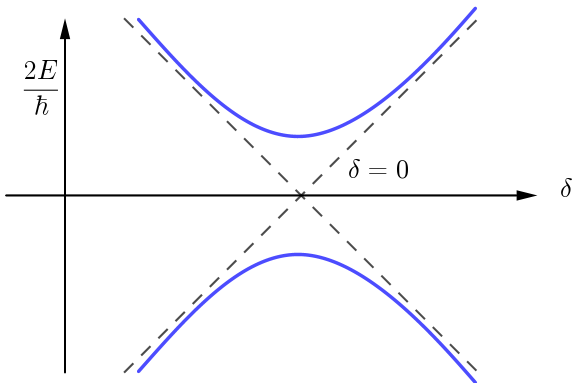

Atomic and Optical Physics I, 04 Resonance IV: Quantum Theory
Table of Contents
1. Information
2. Adiabatic condition
下面推导绝热条件 (Rapid adiabatic passage 中的 adiabatic) 的具体表达式.
Larmor frequency \(\Omega_L = \gamma B_{\mathrm{eff}} \gg \dot{\theta}\) . \(\theta\) 是 \(B_{\mathrm{eff}}\) 与 \(z\) 轴的夹角.
相同的磁场变化速度, 在 \(\theta = 2\pi\) 附近时, \(\theta\) 变化最明显. 也就是说磁场匀速变化 时, 在 \(\theta = \pi/2\) 时, \(\dot{\theta}\) 达到最大值, 而 \(B_{\mathrm{eff}}\) 达到最小值, 因此只要考虑在 \(\theta = \pi/2\) 附近的情况即可.
此时
\begin{align} B_{z, \mathrm{eff}} = B_0 - \frac{\omega(t)}{\gamma} \end{align} \begin{align} \theta \approx \frac{\pi}{2} - \frac{B_{z, \mathrm{eff}}}{B_1} \end{align} \begin{align} \dot{\theta} = \frac{\dot{\omega}}{\gamma B_1} = \frac{\dot{\omega}}{\omega_R} \ll \omega_R \end{align}也就是说, the change \(\Delta\omega\) in one Rabi period has to be samaller than Rabi frequency.
\begin{align} |\dot{\omega}| \ll \omega_R^2 \end{align}3. Quantized spin in a magnetic field
Hamiltonia
\begin{align} H = - \vec{\mu}\cdot \vec{B}_0 = - \gamma \hat{L}_z B_0 \end{align}由 Heisenberg eq of motion 可得
\begin{align} \frac{\mathrm{d}}{\mathrm{d}t} \vec{\hat{\mu}} = \frac{i}{\hbar}[\hat{H}, \vec{\hat{\mu}}] = \frac{i}{\hbar}\gamma[\hat{H}, \vec{\hat{L}}] = \gamma \vec{\hat{\mu}} \times \vec{\hat{B}} \end{align}这个结果是严格的! 与经典的结果是一致的.
写成期望
\begin{align} \frac{\mathrm{d}}{\mathrm{d}t} \langle\vec{\hat{\mu}}\rangle = \gamma \langle\vec{\hat{\mu}}\rangle \times \vec{\hat{B}} \end{align}- valid for any spin
- valid for spin \(1/2\) \(\Rightarrow\) any two level system
- composite angular momentum (比如原子的总角动量) (unless \(B\) field is so strong that it breaks up the coupling of the angular momentum)
- valid for a system of \(N\) two-level systems (e.g. Dicke superradiance).
4. Two level system spin \(1/2\)
What is the level structure of the electron in magnetic field?
Spin down is lowest state for the electron!
The magnetic moment has to point in the pulse direction( \(\vec{B}\) ), which up, but the electron has negtive charge, the \(\gamma\) factor is negtive and that's why for electron, the vector of spin and the vector of the magnetic momentum are oppsite. (差一负号)
\begin{align} \langle \mu_z \rangle = \frac{\gamma\hbar}{2}(P_{\downarrow} - P_{\uparrow}) = - \frac{\gamma\hbar}{2}(2P_e - 1) \end{align} \begin{align} P_e(t) = \frac{1}{2} - \frac{1}{\hbar\gamma} \langle\mu_z\rangle = \frac{1}{2} - \frac{1}{2} \left( 1 - 2 \frac{\omega_R^2}{\Omega_R^2}\sin^2 \frac{\Omega_Rt}{2} \right) \end{align}最后一个等号利用了经典图像给出的结果. \(P_e\) for \(P\) excited.
如果取 \(P_g(t = 0) = 1\) , 那么 Rabi transition probability
\begin{align} P_e(t) = \frac{\omega_R^2}{\Omega_R^2} \sin^2 \frac{\Omega_Rt}{2} \end{align}5. Spin \(\frac{1}{2}\) Hamiltonian
Question: Can be exactly realized in nature? Or it is an approximation?
Can be exactly realized in nature!
\begin{align} H_0 =& - \vec{\mu}\cdot \vec{B}_0 = - \gamma \hat{S}_z B_0 \\ =&\frac{\hbar}{2}\omega_0 \begin{pmatrix} 1 & 0\\ 0 & -1 \end{pmatrix} = \frac{\hbar\omega_0}{2}\sigma_z \end{align}\(|e\rangle, |g\rangle\) eigenstates with eigenvalues \(\pm \frac{\hbar\omega_0}{2}\)
Now add rotating fields
\begin{align} H_1 =& -\vec{\mu} \cdot\vec{B}_1(t) = -\vec{\mu}\cdot \frac{\omega_R}{\gamma}(-\hat{e}_{x}\cos\omega t - \hat{e}_y\sin\omega t) \\ =& \omega_R (\hat{S}_x\cos\omega t + \hat{S}_y \sin\omega t)\\ =& \frac{\hbar\omega_R}{2}\begin{pmatrix} 0 & e^{-\mathrm{i}\omega t} \\ e^{\mathrm{i}\omega t} & 0 \end{pmatrix} \end{align}So \(H = H_0 + H_1\) .
We go complex in our Hamiltonian, not because we have approximated a real field \(\cos \omega t\) by \(e^{\mathrm{i}\omega t}\) , but because when we have a rotating field and we write down it in Pauli spin matrix, we get imaginary units for the \(\sigma_y\) spin matrix.
Famous dressed atom Hamiltonian describes two-level system + one mode of the EM field (with arbitrary amplitudes). (8.422 课程会细讲)
Since dressed atom picture in the standard way assumes that the photon number \(N\) is large. There is a correspondance that in the limit of \(N\) being large, the Fock state descriptin and the coherent state description fully agree.
6. Solution of the Hamiltonian
Transform to rotating frame. Unitary transofrmation (Rotation operation around \(\hat{e}_z\) )
\begin{align} U = \left.e^{\mathrm{i}\frac{S_z}{\hbar}\theta}\right|_{\theta = \omega t} = \begin{pmatrix} e^{\mathrm{i} \omega t/2} & 0\\ 0 & e^{-\mathrm{i}\omega t/2} \end{pmatrix} \end{align}Then
\begin{align} H' = \frac{\hbar}{2} \begin{pmatrix} \delta & \omega_R \\ \omega_R & -\delta \end{pmatrix} \end{align}is time independent, where \(\delta = \omega - \omega_0\) . Care about \(U \mathrm{i}\hbar\partial_t U^{\dagger}\) result a term \(\sim \omega \sigma_z\) .
Solve it (homework # 1). A special case amplitudes
\begin{align} a_{g} (0) =& 1 \\ |a_e(t)|^2 =& \frac{\omega_R^2}{\Omega_R^2}\sin^2 \frac{\Omega_Rt}{2} \end{align}as derived before.
7. Rapid adiabatic passage — Quantum treatment
无旋转的磁场时
\begin{align} H_0 = \frac{\hbar}{2} \begin{pmatrix} \delta & 0 \\ 0 & -\delta \end{pmatrix} \end{align}本征能量如图中虚线

当加入旋转的磁场时
\begin{align} H_0 = \frac{\hbar}{2} \begin{pmatrix} \delta & \omega_R \\ \omega_R & -\delta \end{pmatrix} \end{align}本征能量为 \(\pm\sqrt{\omega_R^2 + \delta^2}\) , 为图中蓝线, avoid the crossing. 所以当我们慢 慢扫过 \(\delta = 0\) 时, 会保持在蓝线上, spin 被翻转. Landau Zener problem, sweep the system through the avoided crossing.
但在 \(\delta = 0\) 时会有一定概率从一条蓝线跃迁到另外一条蓝线, 我们不加证明地给出 probability to jump from one level to the another one
\begin{align} P_{\mathrm{na}} = e^{- 2\pi \Gamma} \end{align}where \(\mathrm{na}\) means non-adiabatic, \(\Gamma\) is landau-Zener parameter given as
\begin{align} \Gamma = \left(\frac{\omega_R}{2}\right)^2 \left[ \frac{\mathrm{d}\omega}{\mathrm{d}t} \right]^{-1} = \frac{1}{4}\frac{\omega_R^2}{\dot{\omega}} \end{align}因此在之前的 adiabatic 的条件下 \(\omega_{R}^2/\dot{\omega} \gg 1\) , 使得 \(P_{\mathrm{na}}\) 很小.
8. Fast Sweep (没有完全理解)
另一种极限, if you go much faster than the Rabi frequency, the spin has no opportunity to change its orientation.
Let's estimate the result in perturbation. Should we calculate that transition probability by using perturbation theory for an incoherent transition or for coherent transition?
Coherent!
区别在于
- Coherent: population \(\dot{a}_2 = -\mathrm{i}\frac{H_{12}}{\hbar}\) with \(H_{12} = \frac{\hbar}{2}\omega_R\) , 那么短时的演化为 \(a_2 = \frac{1}{2}\omega_R t\) , so \(P_2\sim |a_2|^2 =\omega_R^2 t_{\mathrm{eff}}^2\) , effective time \(t_{\mathrm{eff}}\) (when wave function really changes) of driving the system. Coherent process are always quadratic in time.
- Incoherent: Fermi's Golden Rule \(P \sim \frac{\omega_R^2 t_{\mathrm{eff}}}{\mathrm{density\, of\, states}}\)
Q: What is \(t_{\mathrm{eff}}\) in LZ?
- A. \(t_{\mathrm{eff}} \sim \frac{\omega_R}{\dot{\omega}}\)
- B. \(t_{\mathrm{eff}} \sim \sqrt{\frac{1}{\dot{\omega}}}\)
- C. \(t_{\mathrm{eff}} \sim \frac{1}{\omega_R}\)
the answer is B. \(t_{\mathrm{eff}}\) is the "dephasing" time \(\Delta t\) , the time during which everything is coherent
\begin{align} \Delta\omega \cdot \Delta t = \dot{\omega} \Delta t \cdot\Delta t \sim \pi \Rightarrow \Delta t \sim \sqrt{\frac{1}{\dot{\omega}}} \end{align}Expand \(e^{- 2\pi \Gamma}\) (small \(\Gamma\) )
\begin{align} 1 - P_{\mathrm{na}} = 2\pi\Gamma \propto \frac{\omega_R^2}{\dot{\omega}} \end{align}